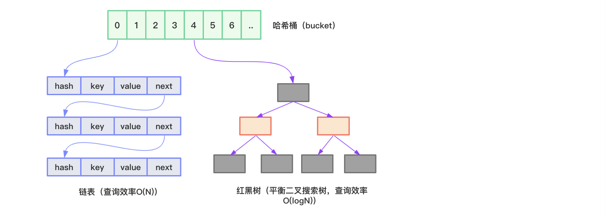

本节用于记录Java HashMap底层数据结构、方法实现原理等，基于JDK 1.8。
底层数据结构
Java HashMap底层采用哈希表结构（数组+链表、JDK1.8后为数组+链表或红黑树）实现，结合了数组和链表的优点：
数组优点：通过数组下标可以快速实现对数组元素的访问，效率极高；
链表优点：插入或删除数据不需要移动元素，只需修改节点引用，效率极高。
HashMap图示如下所示：

HashMap内部使用数组存储数据，数组中的每个元素类型为Node<K,V>：
1 | static class Node<K,V> implements Map.Entry<K,V> { |
Node包含了四个字段：hash、key、value、next，其中next表示链表的下一个节点。
HashMap通过hash方法计算key的哈希码，然后通过(n-1)&hash公式（n为数组长度）得到key在数组中存放的下标。当两个key在数组中存放的下标一致时，数据将以链表的方式存储（哈希冲突，哈希碰撞）。我们知道，在链表中查找数据必须从第一个元素开始一层一层往下找，直到找到为止，时间复杂度为O(N)，所以当链表长度越来越长时，HashMap的效率越来越低。
为了解决这个问题，JDK1.8开始采用数组+链表+红黑树的结构来实现HashMap。当链表中的元素超过8个（TREEIFY_THRESHOLD）并且数组长度大于64（MIN_TREEIFY_CAPACITY）时，会将链表转换为红黑树，转换后数据查询时间复杂度为O(logN)。
红黑树的节点使用TreeNode表示：
1 | static final class TreeNode<K,V> extends LinkedHashMap.Entry<K,V> { |
HashMap包含几个重要的变量：
1 | // 数组默认的初始化长度16 |
上面这些字段在下面源码解析的时候尤为重要，其中需要着重讨论的是加载因子是什么，为什么默认值为0.75f。
加载因子也叫扩容因子，用于决定HashMap数组何时进行扩容。比如数组容量为16，加载因子为0.75，那么扩容阈值为16*0.75=12，即HashMap数据量大于等于12时，数组就会进行扩容。我们都知道，数组容量的大小在创建的时候就确定了，所谓的扩容指的是重新创建一个指定容量的数组，然后将旧值复制到新的数组里。扩容这个过程非常耗时，会影响程序性能。所以加载因子是基于容量和性能之间平衡的结果：
- 当加载因子过大时，扩容阈值也变大，也就是说扩容的门槛提高了，这样容量的占用就会降低。但这时哈希碰撞的几率就会增加，效率下降；
- 当加载因子过小时，扩容阈值变小，扩容门槛降低，容量占用变大。这时候哈希碰撞的几率下降，效率提高。
可以看到容量占用和性能是此消彼长的关系，它们的平衡点由加载因子决定，0.75是一个即兼顾容量又兼顾性能的经验值。
此外用于存储数据的table字段使用transient修饰，通过transient修饰的字段在序列化的时候将被排除在外，那么HashMap在序列化后进行反序列化时，是如何恢复数据的呢？HashMap通过自定义的readObject/writeObject方法自定义序列化和反序列化操作。这样做主要是出于以下两点考虑：
- table一般不会存满，即容量大于实际键值对个数，序列化table未使用的部分不仅浪费时间也浪费空间；
- key对应的类型如果没有重写hashCode方法，那么它将调用Object的hashCode方法，该方法为native方法，在不同JVM下实现可能不同；换句话说，同一个键值对在不同的JVM环境下，在table中存储的位置可能不同，那么在反序列化table操作时可能会出错。
所以在HashXXX类中（如HashTable，HashSet，LinkedHashMap等等），我们可以看到，这些类用于存储数据的字段都用transient修饰，并且都自定义了readObject/writeObject方法。readObject/writeObject方法这节就不进行源码分析了，有兴趣自己研究。
put源码
put方法源码如下：
1 | public V put(K key, V value) { |
put方法通过hash函数计算key对应的哈希值，hash函数源码如下：
1 | static final int hash(Object key) { |
如果key为null，返回0，不为null，则通过(h = key.hashCode()) ^ (h >>> 16)公式计算得到哈希值。该公式通过hashCode的高16位异或低16位得到哈希值，主要从性能、哈希碰撞角度考虑，减少系统开销，不会造成因为高位没有参与下标计算从而引起的碰撞。
得到key对应的哈希值后，再调用putVal(hash(key), key, value, false, true)方法插入元素：
1 | final V putVal(int hash, K key, V value, boolean onlyIfAbsent, |
put操作过程总结：
- 判断HashMap数组是否为空，是的话初始化数组（由此可见，在创建HashMap对象的时候并不会直接初始化数组）；
- 通过
(n-1) & hash计算key在数组中的存放索引； - 目标索引位置为空的话，直接创建Node存储；
目标索引位置不为空的话，分下面三种情况：
4.1. key相同，覆盖旧值；
4.2. 该节点类型是红黑树的话，执行红黑树插入操作；
4.3. 该节点类型是链表的话，遍历到最后一个元素尾插入，如果期间有遇到key相同的，则直接覆盖。如果链表长度大于等于TREEIFY_THRESHOLD，并且数组容量大于等于MIN_TREEIFY_CAPACITY，则将链表转换为红黑树结构；
判断HashMap元素个数是否大于等于threshold，是的话，进行扩容操作。
get源码
get和put相比，就简单多了，下面是get操作源码：
1 | public V get(Object key) { |
resize源码
由前面的put源码分析我们知道，数组的初始化和扩容都是通过调用resize方法完成的，所以现在来关注下resize方法的源码：
1 | final Node<K,V>[] resize() { |
JDK1.8在扩容时通过高位运算e.hash & oldCap结果是否为0来确定元素是否需要移动，主要有如下两种情况：
情况一：
扩容前oldCap=16，hash=5，(n-1)&hash=15&5=5，hash&oldCap=5&16=0；
扩容后newCap=32，hash=5，(n-1)&hash=31&5=5，hash&oldCap=5&16=0。
这种情况下，扩容后元素索引位置不变，并且hash&oldCap==0。
情况二：
扩容前oldCap=16，hash=18，(n-1)&hash=15&18=2，hash&oldCap=18&16=16；
扩容后newCap=32，hash=18，(n-1)&hash=31&18=18，hash&oldCap=18&16=16。
这种情况下，扩容后元素索引位置为18，即旧索引2加16(oldCap)，并且hash&oldCap!=0。
遍历原理
我们通常使用下面两种方式遍历HashMap：
1 | HashMap<String, Object> map = new HashMap<>(); |
程序输出：
1 | 1: a |
通过前面对put源码的分析，我们知道HashMap是无序的，输出元素顺序和插入元素顺序一般都不一样。但是多次运行上面的程序你会发现，每次遍历的顺序都是一样的。那么遍历的原理是什么，内部是如何操作的？
通过entrySet或者keySet遍历，它们的内部原理是一样的，这里以entrySet为例。
通过查看代码对应的class文件，你会发现下面这段代码实际会被转换为iterator遍历：
1 | Set<Map.Entry<String, Object>> entries = map.entrySet(); |
增强for循环会被编译为：
1 | Set<Entry<String, Object>> entries = map.entrySet(); |
我们查看entrySet，iterator，hasNext，next方法的源码就可以清楚的了解到HashMap遍历原理了：
1 | public Set<Map.Entry<K,V>> entrySet() { |
总之，遍历HashMap的过程就是从头查找HashMap数组中的不为空的结点，如果该结点下存在链表，则遍历该链表，遍历完链表后再找HashMap数组中下一个不为空的结点，以此进行下去直到遍历结束。
那么，如果某个结点下是红黑树结构的话，怎么遍历？其实当链表转换为红黑树时，链表节点里包含的next字段信息是保留的，所以我们依旧可以通过红黑树节点中的next字段找到下一个节点。
与JDK1.7主要区别
JDK1.7 HashMap源码：https://github.com/ZhaoX/jdk-1.7-annotated/blob/master/src/java/util/HashMap.java。
数组元素类型不同
JDK1.8 HashMap数组元素类型为Node<K,V>，JDK1.7 HashMap数组元素类型为Entry<K,V>：
1 | transient Entry<K,V>[] table = (Entry<K,V>[]) EMPTY_TABLE; |
实际就是换了个类名，并没有什么本质不同。
hash计算规则不同
JDK1.7 hash计算规则为：
1 | final int hash(Object k) { |
相比于JDK1.8的hash方法，JDK1.7的hash方法的性能会稍差一点。
put操作不同
JDK1.7并没有使用红黑树，如果哈希冲突后，都用链表解决。区别于JDK1.8的尾部插入，JDK1.7采用头部插入的方式：
1 | public V put(K key, V value) { |
扩容操作不同
JDK1.8在扩容时通过高位运算e.hash & oldCap结果是否为0来确定元素是否需要移动，JDK1.7重新计算了每个元素的哈希值，按旧链表的正序遍历链表、在新链表的头部依次插入，即在转移数据、扩容后，容易出现链表逆序的情况：
1 | void resize(int newCapacity) { |
此时若多线程并发执行resize操作，容易出现环形链表，从而在获取数据、遍历链表时造成死循环，具体可以参考：https://blog.csdn.net/hhx0626/article/details/54024222。